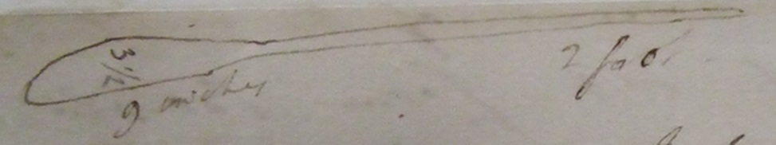

Thomas Beddoes to James Watt, 7 July [1794]
Monday 7 July
Dear Sir
I am afraid you will receive this letter before the arrival of the manganese which did not set out from Bristol till yesterday. Perhaps nitre will be the best material from which to procure oxegene air; & your apparatus will I apprehend be equally adapted to this material. I think it will be advantageous to inform the public where they might apply for apparatuses: So I will mention W & B if you will give me leave. Perhaps the price might be nearly ascertained by the time the engraving can be finished – I had written just to this place when I received your letter. I always procure oxygene from manganese by a very gentle heat – a low red heat – were your joints secure? – Cast iron does well for heating manganese in: & it will last almost for ever. All the inconvenience I ever experienced was the extrication of much water, which choaked my pipes: & for catching which there must be a contrivance – an iron matrass with a long neck will, I think, do best either for nitre or manganese. [image of vessel]
I long very much to see your drawing: as also the apparatus. I verily believe as you say charcoal air will be serviceable. I am certain it will in pulmonic inflammation & incipient phthisis. Oxygene air is getting into great repute in London. ‘Dr Saunders is so strenuous in the idea that the new remedies will prove of the highest benefit to mankind & open many new lights respecting disorders that he has offered me a share in his practice in Guy’s Hospital, i.e. to select for my patients those I may choose for administering the new remedy’. These are the words of a correspondent in town: who says he has done much by oxygene air.
I certainly am very glad that you take so great an interest in this business; & when I say that I cannot hear from you too often, I ought not to be suspected of paying compliments, or saying what it is put to me to say –
I have at this moment as proper a patient as can be imagined for the trial of charcoal air in phthisis – with strength little impaired & very mild symptoms.
Yours with great regard & thankfulness
Thos Beddoes
I wish Mrs Watt wd take a journey – suppose to breathe the air of these downs –
MS: LoB MS 3219/4/28/08